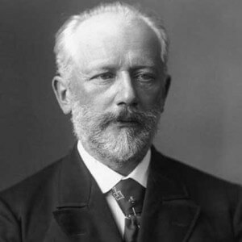

 (Piotr Ilich Tchaikovsky o Chaikovski; Votkinsk, Rusia, 1840 - San Petersburgo, 1893) Compositor ruso. A pesar de ser contemporáneo estricto del Grupo de los Cinco, constituido por figuras de la talla de Borodin, Mussorgsky o Rimski-Korsakov, el estilo de Tchaikovsky no puede encasillarse dentro de los márgenes del nacionalismo imperante entonces en su Rusia natal. De carácter cosmopolita en lo que respecta a las influencias (entre ellas y en un lugar preponderante la del sinfonismo alemán, aunque no carente de elementos rusos), su música es ante todo profundamente expresiva y personal, reveladora de la personalidad del autor, compleja y atormentada.
A los años de su plácida infancia se remontan los primeros estudios teóricos y las primeras experiencias musicales, entre ellas la ópera Don Giovanni de Mozart, que dejó una huella imborrable en el ánimo del muchacho. Desde entonces se dedicó siempre al estudio del arte, aunque, por deseo de su padre, se matriculó en la facultad de derecho de San Petersburgo y, conseguido el título de leyes, aceptó un puesto en el Ministerio de Justicia, en el que, sin embargo, no permaneció mucho tiempo: en 1863 renunció al empleo para poder asistir al curso de composición que Anton Rubinstein impartía en el Conservatorio de San Petersburgo. Diplomado en 1865, fue designado al año siguiente para enseñar armonía en el Conservatorio de Moscú, donde desarrolló su actividad hasta 1877.
Los primeros pasos de Tchaikovsky en el mundo de la música no revelaron un especial talento ni para la interpretación ni para la creación. Sus primeras obras, como el poema sinfónico Fatum o la Sinfonía núm. 1 «Sueños de invierno», mostraban una personalidad poco definida. De inspiración fácil, gustaba del lirismo efusivo y espontáneo, abierto a inflexiones idílicas o elegíacas de una grata cantabilidad, lo que explica el éxito posterior de sus obras tanto en su patria como en el extranjero.
De finales de esta etapa data la primera de sus composiciones que gozó de aceptación, la obertura Romeo y Julieta (1869). Esta "obertura fantasía" rehúye todo pintoresquismo para centrarse en el destino de la pareja protagonista. Inspirada en el trágico devenir del Romeo y Julieta shakespeariano y dotada de una expresividad poco corriente, la partitura tuvo una larga gestación: a causa de los juicios críticos de Mily Balakirev, Tchaikovsky llegó a escribir tres versiones de la misma, la más interpretada de las cuales es la tercera, fechada en 1880.
Sólo tras la composición, ya en la década de 1870, de partituras como la Sinfonía núm. 2 «Pequeña Rusia» y, sobre todo, del célebre Concierto para piano y orquesta núm. 1 (pieza virtuosista estrenada en 1875 con momentos absolutamente inolvidables, como su conocida y brillante introducción), la música de Tchaikovsky empezó a adquirir un tono propio y característico, en ocasiones efectista y cada vez más dado a la melancolía. En julio de 1877 se casó con una joven de la que se separó pocos meses después de la boda. Las inquietudes y amarguras de este triste episodio trastornaron su vida interior, causando también perjuicios a su salud; atacado de una grave depresión nerviosa, abandonó entonces Rusia para recluirse en una pequeña aldea junto al lago de Ginebra.
La madurez.
Gracias al sostén económico de una rica viuda, Nadejda von Meck (protectora también de Debussy y a la que, paradójicamente, nunca llegaría a conocer), Tchaikovsky pudo dedicar, desde finales de la década de 1870, todo su tiempo a la composición. Fruto de esa dedicación exclusiva fueron algunas de sus obras más hermosas y originales, entre las que sobresalen el Concierto para violín y orquesta (1877), el ballet El lago de los cisnes (1877), la ópera Evgeny Oneguin (1878), la Obertura 1812 (1880) y Capricho italiano (1880).
De todas ellas, la más conocida es su primer gran ballet, El lago de los cisnes (1877). Pese al escaso éxito de su estreno, la romántica y mágica historia de amor entre Sigfrido y Odette, princesa transformada en cisne, es actualmente una de las piezas cimeras del repertorio, con números tan célebres como el Vals del acto primero, la Introducción del segundo o las danzas características del tercero.
No menos importante es el Concierto para violín y orquesta (1877), construido en tres movimientos según el esquema de los grandes modelos clásicos. El segundo movimiento es un andante en menor titulado "Canzonetta", y destaca como uno de los fragmentos más famosos de Tchaikovsky y más a menudo interpretados por su notable facilidad de ejecución. La "Canzonetta" es ciertamente una de las más bellas páginas de Tchaikovsky; la lánguida y femenina melancolía, uno de los rasgos más característicos y constantes de su arte, no aparece aquí bajo su forma habitual (elegancia expresiva y acento graciosamente sentimental), sino ajustada a un motivo impregnado de una delicadeza íntima y de pura poesía, algo que raramente se encuentra en Tchaikovsky.
En 1885, ya restablecido, regresó a Rusia, y dos años después inició una vasta gira de conciertos por Europa y América. A la última fase de su actividad creadora pertenecen la ópera La dama de picas (1890), los dos ballets La bella durmiente (1890) y Cascanueces (1892) y la última de sus seis sinfonías, verdadero testamento musical: la Sinfonía núm. 6 «Patética».
Estrenado en San Petersburgo el 15 de enero de 1890, La bella durmiente es el segundo de sus grandes ballets y fue uno de los primeros ejemplos del género compuestos según la norma de unir la creación musical y la coreográfica: Tchaikovsky compuso la partitura según las indicaciones del coreógrafo francés Marius Petipa. La obra nació así como una unidad, en la que la música se adapta admirablemente a la acción dramática. Destacan el vals del primer acto y las danzas del tercero, éstas protagonizadas por diferentes personajes de los cuentos de hadas.
Dos años después estrenaría también en San Petersburgo el ballet en dos actos Cascanueces, cuya historia, basada en un relato de E. T. A. Hoffmann, prescindió de la vertiente oscura y psicológica del original para convertirse en un mágico cuento de Navidad. A pesar de que fue el ballet menos apreciado por el propio compositor, se cuenta entre los que más fama ha alcanzado, gracias sobre todo al divertissement que marca su punto culminante: seis danzas características (Trepak, Danza árabe, Danza española, Danza china...) y el Vals de las flores.
Pocos días antes de morir, Tchaikovsky dirigió en Moscú su Sinfonía núm. 6 (1893), más conocida con el nombre de Patética, obra especialmente reveladora de la compleja personalidad del músico y del drama íntimo que rodeó su existencia, atormentada por una homosexualidad reprimida y un constante y mórbido estado depresivo. De amplias proporciones pero desigual, esta partitura refleja, quizá mejor que las otras, las peculiares características del estilo de Tchaikovsky y la volubilidad de su fantasía, que tendía a desperdigar los propios temas en lugar de unirlos en una visión constructiva unitaria. El mismo año de su estreno, 1893, se declaró una epidemia de cólera; contagiado el compositor, la enfermedad puso fin a su existencia.
Desde entonces se ha querido interpretar la Sinfonía núm. 6 «Patética» (y especialmente el último tiempo, que, contrariamente a la costumbre sinfónica, es un movimiento lento: "Adagio lamentoso") como la expresión de un triste presentimiento que Tchaikovsky debió de tener de su próximo fin. Ciertamente, en el "Adagio lamentoso" vuelve a caer sobre la orquesta la atmósfera sombría y dolorida que había abierto la sinfonía y que había quedado como olvidada en el paréntesis de los dos "Allegros" serenos y desenvueltos, apenas rozados aquí y allá por acentos de una amable melancolía; el movimiento final, en cambio, expresa todo el dolor y la amargura de un músico sobremanera sensible y trágicamente escindido.
{kind=link}